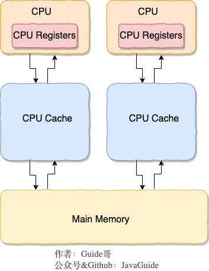
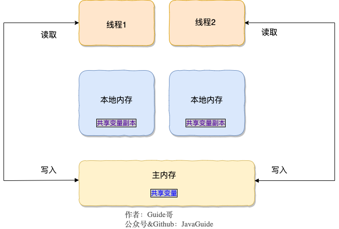

1. 并发¶
2. Java 并发基础常见面试题总结¶
2.1. 什么是线程和进程?¶
2.1.1. 何为进程?¶
进程是程序的一次执行过程，是系统运行程序的基本单位，因此进程是动态的。系统运行一个程序即是一个进程从创建，运行到消亡的过程。
在 Java 中，当我们启动 main 函数时其实就是启动了一个 JVM 的进程，而 main 函数所在的线程就是这个进程中的一个线程，也称主线程。
在 windows 中通过查看任务管理器的方式，我们就可以清楚看到 window 当前运行的进程（.exe 文件的运行）。
2.1.2. 何为线程?¶
他这种
共享 堆 方法区
独有 计数器 VMstack 本地stack
就 JDK 1.6
线程与进程相似，但线程是一个比进程更小的执行单位。一个进程在其执行的过程中可以产生多个线程。与进程不同的是同类的多个线程共享进程的堆和方法区资源，但每个线程有自己的程序计数器、虚拟机栈和本地方法栈，所以系统在产生一个线程，或是在各个线程之间作切换工作时，负担要比进程小得多，也正因为如此，线程也被称为轻量级进程。
Java 程序天生就是多线程程序，我们可以通过 JMX 来看一下一个普通的 Java 程序有哪些线程，代码如下。
1 2 3 4 5 6 7 8 9 10 11 12 | |
上述程序输出如下（输出内容可能不同，不用太纠结下面每个线程的作用，只用知道 main 线程执行 main 方法即可）：
1 2 3 4 5 | |
从上面的输出内容可以看出：一个 Java 程序的运行是 main 线程和多个其他线程同时运行。
2.2. 请简要描述线程与进程的关系,区别及优缺点？¶
从 JVM 角度说进程和线程之间的关系
2.2.1. 图解进程和线程的关系¶
下图是 Java 内存区域，通过下图我们从 JVM 的角度来说一下线程和进程之间的关系。如果你对 Java 内存区域 (运行时数据区) 这部分知识不太了解的话可以阅读一下这篇文章：《可能是把 Java 内存区域讲的最清楚的一篇文章》

从上图可以看出：一个进程中可以有多个线程，多个线程共享进程的堆和方法区 (JDK1.8 之后的元空间)资源，但是每个线程有自己的程序计数器、虚拟机栈 和 本地方法栈。
总结： 线程是进程划分成的更小的运行单位。线程和进程最大的不同在于基本上各进程是独立的，而各线程则不一定，因为同一进程中的线程极有可能会相互影响。线程执行开销小，但不利于资源的管理和保护；而进程正相反。
下面是该知识点的扩展内容！
下面来思考这样一个问题：为什么程序计数器、虚拟机栈和本地方法栈是线程私有的呢？为什么堆和方法区是线程共享的呢？
2.2.2. 程序计数器为什么是私有的?¶
程序计数器主要有下面两个作用：
- 字节码解释器通过改变程序计数器来依次读取指令，从而实现代码的流程控制，如：顺序执行、选择、循环、异常处理。
- 在多线程的情况下，程序计数器用于记录当前线程执行的位置，从而当线程被切换回来的时候能够知道该线程上次运行到哪儿了。
需要注意的是，如果执行的是 native 方法，那么程序计数器记录的是 undefined 地址，只有执行的是 Java 代码时程序计数器记录的才是下一条指令的地址。
所以，程序计数器私有主要是为了线程切换后能恢复到正确的执行位置。
2.2.3. 虚拟机栈和本地方法栈为什么是私有的?¶
- 虚拟机栈： 每个 Java 方法在执行的同时会创建一个栈帧用于存储局部变量表、操作数栈、常量池引用等信息。从方法调用直至执行完成的过程，就对应着一个栈帧在 Java 虚拟机栈中入栈和出栈的过程。
- 本地方法栈： 和虚拟机栈所发挥的作用非常相似，区别是： 虚拟机栈为虚拟机执行 Java 方法 （也就是字节码）服务，而本地方法栈则为虚拟机使用到的 Native 方法服务。 在 HotSpot 虚拟机中和 Java 虚拟机栈合二为一。
所以，为了保证线程中的局部变量不被别的线程访问到，虚拟机栈和本地方法栈是线程私有的。
2.2.4. 一句话简单了解堆和方法区¶
堆和方法区是所有线程共享的资源，其中堆是进程中最大的一块内存，主要用于存放新创建的对象 (几乎所有对象都在这里分配内存)，方法区主要用于存放已被加载的类信息、常量、静态变量、即时编译器编译后的代码等数据。
2.3. 说说并发与并行的区别?¶
- 并发： 同一时间段，多个任务都在执行 (单位时间内不一定同时执行)；
- 并行： 单位时间内，多个任务同时执行。
2.4. 为什么要使用多线程呢?¶
先从总体上来说：
- 从计算机底层来说： 线程可以比作是轻量级的进程，是程序执行的最小单位,线程间的切换和调度的成本远远小于进程。另外，多核 CPU 时代意味着多个线程可以同时运行，这减少了线程上下文切换的开销。
- 从当代互联网发展趋势来说： 现在的系统动不动就要求百万级甚至千万级的并发量，而多线程并发编程正是开发高并发系统的基础，利用好多线程机制可以大大提高系统整体的并发能力以及性能。
再深入到计算机底层来探讨：
- 单核时代： 在单核时代多线程主要是为了提高 CPU 和 IO 设备的综合利用率。举个例子：当只有一个线程的时候会导致 CPU 计算时，IO 设备空闲；进行 IO 操作时，CPU 空闲。我们可以简单地说这两者的利用率目前都是 50%左右。但是当有两个线程的时候就不一样了，当一个线程执行 CPU 计算时，另外一个线程可以进行 IO 操作，这样两个的利用率就可以在理想情况下达到 100%了。
- 多核时代: 多核时代多线程主要是为了提高 CPU 利用率。举个例子：假如我们要计算一个复杂的任务，我们只用一个线程的话，CPU 只会一个 CPU 核心被利用到，而创建多个线程就可以让多个 CPU 核心被利用到，这样就提高了 CPU 的利用率。
2.5. 使用多线程可能带来什么问题?¶
并发编程的目的就是为了能提高程序的执行效率提高程序运行速度，但是并发编程并不总是能提高程序运行速度的，而且并发编程可能会遇到很多问题，比如：内存泄漏、死锁、线程不安全等等。
2.6. 说说线程的生命周期和状态?¶
Java 线程在运行的生命周期中的指定时刻只可能处于下面 6 种不同状态的其中一个状态（图源《Java 并发编程艺术》4.1.4 节）。

线程在生命周期中并不是固定处于某一个状态而是随着代码的执行在不同状态之间切换。Java 线程状态变迁如下图所示（图源《Java 并发编程艺术》4.1.4 节）：

订正(来自issue736)：原图中 wait到 runnable状态的转换中，
join实际上是Thread类的方法，但这里写成了Object。
由上图可以看出：线程创建之后它将处于 NEW（新建） 状态，调用 start() 方法后开始运行，线程这时候处于 READY（可运行） 状态。可运行状态的线程获得了 CPU 时间片（timeslice）后就处于 RUNNING（运行） 状态。
操作系统隐藏 Java 虚拟机（JVM）中的 READY 和 RUNNING 状态，它只能看到 RUNNABLE 状态（图源：HowToDoInJava：Java Thread Life Cycle and Thread States），所以 Java 系统一般将这两个状态统称为 RUNNABLE（运行中） 状态 。

当线程执行 wait()方法之后，线程进入 WAITING（等待） 状态。进入等待状态的线程需要依靠其他线程的通知才能够返回到运行状态，而 TIME_WAITING(超时等待) 状态相当于在等待状态的基础上增加了超时限制，比如通过 sleep（long millis）方法或 wait（long millis）方法可以将 Java 线程置于 TIMED WAITING 状态。当超时时间到达后 Java 线程将会返回到 RUNNABLE 状态。当线程调用同步方法时，在没有获取到锁的情况下，线程将会进入到 BLOCKED（阻塞） 状态。线程在执行 Runnable 的run()方法之后将会进入到 TERMINATED（终止） 状态。
2.7. 什么是上下文切换?¶
多线程编程中一般线程的个数都大于 CPU 核心的个数，而一个 CPU 核心在任意时刻只能被一个线程使用，为了让这些线程都能得到有效执行，CPU 采取的策略是为每个线程分配时间片并轮转的形式。当一个线程的时间片用完的时候就会重新处于就绪状态让给其他线程使用，这个过程就属于一次上下文切换。
概括来说就是：当前任务在执行完 CPU 时间片切换到另一个任务之前会先保存自己的状态，以便下次再切换回这个任务时，可以再加载这个任务的状态。任务从保存到再加载的过程就是一次上下文切换。
上下文切换通常是计算密集型的。也就是说，它需要相当可观的处理器时间，在每秒几十上百次的切换中，每次切换都需要纳秒量级的时间。所以，上下文切换对系统来说意味着消耗大量的 CPU 时间，事实上，可能是操作系统中时间消耗最大的操作。
Linux 相比与其他操作系统（包括其他类 Unix 系统）有很多的优点，其中有一项就是，其上下文切换和模式切换的时间消耗非常少。
2.8. 什么是线程死锁?如何避免死锁?¶
2.8.1. 认识线程死锁¶
两个银行账户 一个300 一个 400
我要往1取500 2取600 死锁了
线程死锁描述的是这样一种情况：多个线程同时被阻塞，它们中的一个或者全部都在等待某个资源被释放。由于线程被无限期地阻塞，因此程序不可能正常终止。
如下图所示，线程 A 持有资源 2，线程 B 持有资源 1，他们同时都想申请对方的资源，所以这两个线程就会互相等待而进入死锁状态。

下面通过一个例子来说明线程死锁,代码模拟了上图的死锁的情况 (代码来源于《并发编程之美》)：
1 2 3 4 5 6 7 8 9 10 11 12 13 14 15 16 17 18 19 20 21 22 23 24 25 26 27 28 29 30 31 32 33 34 35 36 | |
Output
1 2 3 4 | |
线程 A 通过 synchronized (resource1) 获得 resource1 的监视器锁，然后通过Thread.sleep(1000);让线程 A 休眠 1s 为的是让线程 B 得到执行然后获取到 resource2 的监视器锁。线程 A 和线程 B 休眠结束了都开始企图请求获取对方的资源，然后这两个线程就会陷入互相等待的状态，这也就产生了死锁。上面的例子符合产生死锁的四个必要条件。
学过操作系统的朋友都知道产生死锁必须具备以下四个条件：
- 互斥条件：该资源任意一个时刻只由一个线程占用。
- 请求与保持条件：一个进程因请求资源而阻塞时，对已获得的资源保持不放。
- 不剥夺条件:线程已获得的资源在未使用完之前不能被其他线程强行剥夺，只有自己使用完毕后才释放资源。
- 循环等待条件:若干进程之间形成一种头尾相接的循环等待资源关系。
2.8.2. 如何避免线程死锁?¶
一次申请所有资源
申请不到主动释放
按照顺序申请
我上面说了产生死锁的四个必要条件，为了避免死锁，我们只要破坏产生死锁的四个条件中的其中一个就可以了。现在我们来挨个分析一下：
- 破坏互斥条件 ：这个条件我们没有办法破坏，因为我们用锁本来就是想让他们互斥的（临界资源需要互斥访问）。
- 破坏请求与保持条件 ：一次性申请所有的资源。
- 破坏不剥夺条件 ：占用部分资源的线程进一步申请其他资源时，如果申请不到，可以主动释放它占有的资源。
- 破坏循环等待条件 ：靠按序申请资源来预防。按某一顺序申请资源，释放资源则反序释放。破坏循环等待条件。
我们对线程 2 的代码修改成下面这样就不会产生死锁了。
1 2 3 4 5 6 7 8 9 10 11 12 13 14 | |
Output
1 2 3 4 5 6 7 8 | |
我们分析一下上面的代码为什么避免了死锁的发生?
线程 1 首先获得到 resource1 的监视器锁,这时候线程 2 就获取不到了。然后线程 1 再去获取 resource2 的监视器锁，可以获取到。然后线程 1 释放了对 resource1、resource2 的监视器锁的占用，线程 2 获取到就可以执行了。这样就破坏了破坏循环等待条件，因此避免了死锁。
2.9. 说说 sleep() 方法和 wait() 方法区别和共同点?¶
sleep() 没释放 wait() 释放了
- 两者最主要的区别在于：
sleep()方法没有释放锁，而wait()方法释放了锁 。 - 两者都可以暂停线程的执行。
wait()通常被用于线程间交互/通信，sleep()通常被用于暂停执行。wait()方法被调用后，线程不会自动苏醒，需要别的线程调用同一个对象上的notify()或者notifyAll()方法。sleep()方法执行完成后，线程会自动苏醒。或者可以使用wait(long timeout)超时后线程会自动苏醒。
2.10. 为什么我们调用 start() 方法时会执行 run() 方法，为什么我们不能直接调用 run() 方法？¶
参考线程模型 要start() 变成 runnbale
不变成 runnable 直接 run 就在 main 下
这是另一个非常经典的 java 多线程面试问题，而且在面试中会经常被问到。很简单，但是很多人都会答不上来！
new 一个 Thread，线程进入了新建状态。调用 start()方法，会启动一个线程并使线程进入了就绪状态，当分配到时间片后就可以开始运行了。 start() 会执行线程的相应准备工作，然后自动执行 run() 方法的内容，这是真正的多线程工作。 但是，直接执行 run() 方法，会把 run() 方法当成一个 main 线程下的普通方法去执行，并不会在某个线程中执行它，所以这并不是多线程工作。
总结： 调用 start() 方法方可启动线程并使线程进入就绪状态，直接执行 run() 方法的话不会以多线程的方式执行。
3. Java 并发进阶常见面试题总结¶
3.1. 1.synchronized 关键字¶

3.1.1. 1.1.说一说自己对于 synchronized 关键字的了解¶
synchronized 关键字解决的是多个线程之间访问资源的同步性，synchronized关键字可以保证被它修饰的方法或者代码块在任意时刻只能有一个线程执行。
另外，在 Java 早期版本中，synchronized 属于 重量级锁，效率低下。
为什么呢？
因为监视器锁（monitor）是依赖于底层的操作系统的 Mutex Lock 来实现的，Java 的线程是映射到操作系统的原生线程之上的。如果要挂起或者唤醒一个线程，都需要操作系统帮忙完成，而操作系统实现线程之间的切换时需要从用户态转换到内核态，这个状态之间的转换需要相对比较长的时间，时间成本相对较高。
庆幸的是在 Java 6 之后 Java 官方对从 JVM 层面对 synchronized 较大优化，所以现在的 synchronized 锁效率也优化得很不错了。JDK1.6 对锁的实现引入了大量的优化，如自旋锁、适应性自旋锁、锁消除、锁粗化、偏向锁、轻量级锁等技术来减少锁操作的开销。
所以，你会发现目前的话，不论是各种开源框架还是 JDK 源码都大量使用了 synchronized 关键字。
3.1.2. 说说自己是怎么使用 synchronized 关键字¶
synchronized 关键字最主要的三种使用方式：
1.修饰实例方法: 作用于当前对象实例加锁，进入同步代码前要获得 当前对象实例的锁
1 2 3 | |
2.修饰静态方法: 也就是给当前类加锁，会作用于类的所有对象实例 ，进入同步代码前要获得 当前 class 的锁。因为静态成员不属于任何一个实例对象，是类成员（ static 表明这是该类的一个静态资源，不管 new 了多少个对象，只有一份）。所以，如果一个线程 A 调用一个实例对象的非静态 synchronized 方法，而线程 B 需要调用这个实例对象所属类的静态 synchronized 方法，是允许的，不会发生互斥现象，因为访问静态 synchronized 方法占用的锁是当前类的锁，而访问非静态 synchronized 方法占用的锁是当前实例对象锁。
1 2 3 | |
3.修饰代码块 ：指定加锁对象，对给定对象/类加锁。synchronized(this|object) 表示进入同步代码库前要获得给定对象的锁。synchronized(类.class) 表示进入同步代码前要获得 当前 class 的锁
1 2 3 | |
总结：
synchronized关键字加到static静态方法和synchronized(class)代码块上都是是给 Class 类上锁。synchronized关键字加到实例方法上是给对象实例上锁。- 尽量不要使用
synchronized(String a)因为 JVM 中，字符串常量池具有缓存功能！
下面我以一个常见的面试题为例讲解一下 synchronized 关键字的具体使用。
面试中面试官经常会说：“单例模式了解吗？来给我手写一下！给我解释一下双重检验锁方式实现单例模式的原理呗！”
双重校验锁实现对象单例（线程安全）
1 2 3 4 5 6 7 8 9 10 11 12 13 14 15 16 17 18 19 20 | |
另外，需要注意 uniqueInstance 采用 volatile 关键字修饰也是很有必要。
uniqueInstance 采用 volatile 关键字修饰也是很有必要的， uniqueInstance = new Singleton(); 这段代码其实是分为三步执行：
- 为
uniqueInstance分配内存空间 - 初始化
uniqueInstance - 将
uniqueInstance指向分配的内存地址
但是由于 JVM 具有指令重排的特性，执行顺序有可能变成 1->3->2。指令重排在单线程环境下不会出现问题，但是在多线程环境下会导致一个线程获得还没有初始化的实例。例如，线程 T1 执行了 1 和 3，此时 T2 调用 getUniqueInstance() 后发现 uniqueInstance 不为空，因此返回 uniqueInstance，但此时 uniqueInstance 还未被初始化。
使用 volatile 可以禁止 JVM 的指令重排，保证在多线程环境下也能正常运行。
3.1.3. 构造方法可以使用 synchronized 关键字修饰么？¶
先说结论：构造方法不能使用 synchronized 关键字修饰。
构造方法本身就属于线程安全的，不存在同步的构造方法一说。
3.1.4. 讲一下 synchronized 关键字的底层原理¶
synchronized 关键字底层原理属于 JVM 层面。
3.1.4.1. synchronized 同步语句块的情况¶
1 2 3 4 5 6 7 | |
通过 JDK 自带的 javap 命令查看 SynchronizedDemo 类的相关字节码信息：首先切换到类的对应目录执行 javac SynchronizedDemo.java 命令生成编译后的 .class 文件，然后执行javap -c -s -v -l SynchronizedDemo.class。

从上面我们可以看出：
synchronized 同步语句块的实现使用的是 monitorenter 和 monitorexit 指令，其中 monitorenter 指令指向同步代码块的开始位置，monitorexit 指令则指明同步代码块的结束位置。
当执行 monitorenter 指令时，线程试图获取锁也就是获取 对象监视器 monitor 的持有权。
在 Java 虚拟机(HotSpot)中，Monitor 是基于 C++实现的，由ObjectMonitor实现的。每个对象中都内置了一个
ObjectMonitor对象。另外，
wait/notify等方法也依赖于monitor对象，这就是为什么只有在同步的块或者方法中才能调用wait/notify等方法，否则会抛出java.lang.IllegalMonitorStateException的异常的原因。
在执行monitorenter时，会尝试获取对象的锁，如果锁的计数器为 0 则表示锁可以被获取，获取后将锁计数器设为 1 也就是加 1。
在执行 monitorexit 指令后，将锁计数器设为 0，表明锁被释放。如果获取对象锁失败，那当前线程就要阻塞等待，直到锁被另外一个线程释放为止。
3.1.4.2. synchronized 修饰方法的的情况¶
1 2 3 4 5 | |

synchronized 修饰的方法并没有 monitorenter 指令和 monitorexit 指令，取得代之的确实是 ACC_SYNCHRONIZED 标识，该标识指明了该方法是一个同步方法。JVM 通过该 ACC_SYNCHRONIZED 访问标志来辨别一个方法是否声明为同步方法，从而执行相应的同步调用。
3.1.4.3. 1.3.3.总结¶
synchronized 同步语句块的实现使用的是 monitorenter 和 monitorexit 指令，其中 monitorenter 指令指向同步代码块的开始位置，monitorexit 指令则指明同步代码块的结束位置。
synchronized 修饰的方法并没有 monitorenter 指令和 monitorexit 指令，取得代之的确实是 ACC_SYNCHRONIZED 标识，该标识指明了该方法是一个同步方法。
不过两者的本质都是对对象监视器 monitor 的获取。
3.1.5. 说说 JDK1.6 之后的 synchronized 关键字底层做了哪些优化，可以详细介绍一下这些优化吗¶
JDK1.6 对锁的实现引入了大量的优化，如偏向锁、轻量级锁、自旋锁、适应性自旋锁、锁消除、锁粗化等技术来减少锁操作的开销。
锁主要存在四种状态，依次是：无锁状态、偏向锁状态、轻量级锁状态、重量级锁状态，他们会随着竞争的激烈而逐渐升级。注意锁可以升级不可降级，这种策略是为了提高获得锁和释放锁的效率。
关于这几种优化的详细信息可以查看下面这篇文章：Java6 及以上版本对 synchronized 的优化
3.1.6. 谈谈 synchronized 和 ReentrantLock 的区别¶
3.1.6.1. 两者都是可重入锁¶
“可重入锁” 指的是自己可以再次获取自己的内部锁。比如一个线程获得了某个对象的锁，此时这个对象锁还没有释放，当其再次想要获取这个对象的锁的时候还是可以获取的，如果不可锁重入的话，就会造成死锁。同一个线程每次获取锁，锁的计数器都自增 1，所以要等到锁的计数器下降为 0 时才能释放锁。
3.1.6.2. 1.5.2.synchronized 依赖于 JVM 而 ReentrantLock 依赖于 API¶
synchronized 是依赖于 JVM 实现的，前面我们也讲到了 虚拟机团队在 JDK1.6 为 synchronized 关键字进行了很多优化，但是这些优化都是在虚拟机层面实现的，并没有直接暴露给我们。ReentrantLock 是 JDK 层面实现的（也就是 API 层面，需要 lock() 和 unlock() 方法配合 try/finally 语句块来完成），所以我们可以通过查看它的源代码，来看它是如何实现的。
3.1.6.3. 1.5.3.ReentrantLock 比 synchronized 增加了一些高级功能¶
相比synchronized，ReentrantLock增加了一些高级功能。主要来说主要有三点：
- 等待可中断 :
ReentrantLock提供了一种能够中断等待锁的线程的机制，通过lock.lockInterruptibly()来实现这个机制。也就是说正在等待的线程可以选择放弃等待，改为处理其他事情。 - 可实现公平锁 :
ReentrantLock可以指定是公平锁还是非公平锁。而synchronized只能是非公平锁。所谓的公平锁就是先等待的线程先获得锁。ReentrantLock默认情况是非公平的，可以通过ReentrantLock类的ReentrantLock(boolean fair)构造方法来制定是否是公平的。 - 可实现选择性通知（锁可以绑定多个条件）:
synchronized关键字与wait()和notify()/notifyAll()方法相结合可以实现等待/通知机制。ReentrantLock类当然也可以实现，但是需要借助于Condition接口与newCondition()方法。
Condition是 JDK1.5 之后才有的，它具有很好的灵活性，比如可以实现多路通知功能也就是在一个Lock对象中可以创建多个Condition实例（即对象监视器），线程对象可以注册在指定的Condition中，从而可以有选择性的进行线程通知，在调度线程上更加灵活。 在使用notify()/notifyAll()方法进行通知时，被通知的线程是由 JVM 选择的，用ReentrantLock类结合Condition实例可以实现“选择性通知” ，这个功能非常重要，而且是 Condition 接口默认提供的。而synchronized关键字就相当于整个 Lock 对象中只有一个Condition实例，所有的线程都注册在它一个身上。如果执行notifyAll()方法的话就会通知所有处于等待状态的线程这样会造成很大的效率问题，而Condition实例的signalAll()方法 只会唤醒注册在该Condition实例中的所有等待线程。
如果你想使用上述功能，那么选择 ReentrantLock 是一个不错的选择。性能已不是选择标准
3.2. volatile 关键字¶
volatile 关键字可以保证共享变量的可见性。
volatile 关键字可以禁止指令进行重排序优化。
我们先要从 CPU 缓存模型 说起！
3.2.1. CPU 缓存模型¶
为什么要弄一个 CPU 高速缓存呢？
类比我们开发网站后台系统使用的缓存（比如 Redis）是为了解决程序处理速度和访问常规关系型数据库速度不对等的问题。 CPU 缓存则是为了解决 CPU 处理速度和内存处理速度不对等的问题。
我们甚至可以把 内存可以看作外存的高速缓存，程序运行的时候我们把外存的数据复制到内存，由于内存的处理速度远远高于外存，这样提高了处理速度。
总结：CPU Cache 缓存的是内存数据用于解决 CPU 处理速度和内存不匹配的问题，内存缓存的是硬盘数据用于解决硬盘访问速度过慢的问题。
为了更好地理解，我画了一个简单的 CPU Cache 示意图如下（实际上，现代的 CPU Cache 通常分为三层，分别叫 L1,L2,L3 Cache）:

CPU Cache 的工作方式：
先复制一份数据到 CPU Cache 中，当 CPU 需要用到的时候就可以直接从 CPU Cache 中读取数据，当运算完成后，再将运算得到的数据写回 Main Memory 中。但是，这样存在 内存缓存不一致性的问题 ！比如我执行一个 i++操作的话，如果两个线程同时执行的话，假设两个线程从 CPU Cache 中读取的 i=1，两个线程做了 1++运算完之后再写回 Main Memory 之后 i=2，而正确结果应该是 i=3。
CPU 为了解决内存缓存不一致性问题可以通过制定缓存一致协议或者其他手段来解决。
3.2.2. 讲一下 JMM(Java 内存模型)¶
在 JDK1.2 之前，Java 的内存模型实现总是从主存（即共享内存）读取变量，是不需要进行特别的注意的。而在当前的 Java 内存模型下，线程可以把变量保存本地内存（比如机器的寄存器）中，而不是直接在主存中进行读写。这就可能造成一个线程在主存中修改了一个变量的值，而另外一个线程还继续使用它在寄存器中的变量值的拷贝，造成数据的不一致。

要解决这个问题，就需要把变量声明为volatile，这就指示 JVM，这个变量是共享且不稳定的，每次使用它都到主存中进行读取。
所以，volatile 关键字 除了防止 JVM 的指令重排 ，还有一个重要的作用就是保证变量的可见性。

3.2.3. 并发编程的三个重要特性¶
- 原子性 : 一个的操作或者多次操作，要么所有的操作全部都得到执行并且不会收到任何因素的干扰而中断，要么所有的操作都执行，要么都不执行。
synchronized可以保证代码片段的原子性。 - 可见性 ：当一个变量对共享变量进行了修改，那么另外的线程都是立即可以看到修改后的最新值。
volatile关键字可以保证共享变量的可见性。 - 有序性 ：代码在执行的过程中的先后顺序，Java 在编译器以及运行期间的优化，代码的执行顺序未必就是编写代码时候的顺序。
volatile关键字可以禁止指令进行重排序优化。
3.2.4. 说说 synchronized 关键字和 volatile 关键字的区别¶
synchronized 关键字和 volatile 关键字是两个互补的存在，而不是对立的存在！
volatile关键字是线程同步的轻量级实现，所以volatile性能肯定比synchronized关键字要好。但是volatile关键字只能用于变量而synchronized关键字可以修饰方法以及代码块。volatile关键字能保证数据的可见性，但不能保证数据的原子性。synchronized关键字两者都能保证。volatile关键字主要用于解决变量在多个线程之间的可见性，而synchronized关键字解决的是多个线程之间访问资源的同步性。
3.3. ThreadLocal¶
3.3.1. ThreadLocal 简介¶
就是带有变量复制副本的线程
避免线程竞争
通常情况下，我们创建的变量是可以被任何一个线程访问并修改的。如果想实现每一个线程都有自己的专属本地变量该如何解决呢？ JDK 中提供的ThreadLocal类正是为了解决这样的问题。 ThreadLocal类主要解决的就是让每个线程绑定自己的值，可以将ThreadLocal类形象的比喻成存放数据的盒子，盒子中可以存储每个线程的私有数据。
如果你创建了一个ThreadLocal变量，那么访问这个变量的每个线程都会有这个变量的本地副本，这也是ThreadLocal变量名的由来。他们可以使用 get（） 和 set（） 方法来获取默认值或将其值更改为当前线程所存的副本的值，从而避免了线程安全问题。
再举个简单的例子：
比如有两个人去宝屋收集宝物，这两个共用一个袋子的话肯定会产生争执，但是给他们两个人每个人分配一个袋子的话就不会出现这样的问题。如果把这两个人比作线程的话，那么 ThreadLocal 就是用来避免这两个线程竞争的。
3.3.2. ThreadLocal 示例¶
相信看了上面的解释，大家已经搞懂 ThreadLocal 类是个什么东西了。
1 2 3 4 5 6 7 8 9 10 11 12 13 14 15 16 17 18 19 20 21 22 23 24 25 26 27 28 29 30 31 32 | |
Output:
1 2 3 4 5 6 7 8 9 10 11 12 13 14 15 16 17 18 19 20 | |
从输出中可以看出，Thread-0 已经改变了 formatter 的值，但仍然是 thread-2 默认格式化程序与初始化值相同，其他线程也一样。
上面有一段代码用到了创建 ThreadLocal 变量的那段代码用到了 Java8 的知识，它等于下面这段代码，如果你写了下面这段代码的话，IDEA 会提示你转换为 Java8 的格式(IDEA 真的不错！)。因为 ThreadLocal 类在 Java 8 中扩展，使用一个新的方法withInitial()，将 Supplier 功能接口作为参数。
1 2 3 4 5 6 7 | |
3.3.3. ThreadLocal 原理¶
从 Thread类源代码入手。
1 2 3 4 5 6 7 8 9 | |
从上面Thread类 源代码可以看出Thread 类中有一个 threadLocals 和 一个 inheritableThreadLocals 变量，它们都是 ThreadLocalMap 类型的变量,我们可以把 ThreadLocalMap 理解为ThreadLocal 类实现的定制化的 HashMap。默认情况下这两个变量都是 null，只有当前线程调用 ThreadLocal 类的 set或get方法时才创建它们，实际上调用这两个方法的时候，我们调用的是ThreadLocalMap类对应的 get()、set()方法。
ThreadLocal类的set()方法
1 2 3 4 5 6 7 8 9 10 11 | |
通过上面这些内容，我们足以通过猜测得出结论：最终的变量是放在了当前线程的 ThreadLocalMap 中，并不是存在 ThreadLocal 上，ThreadLocal 可以理解为只是ThreadLocalMap的封装，传递了变量值。 ThrealLocal 类中可以通过Thread.currentThread()获取到当前线程对象后，直接通过getMap(Thread t)可以访问到该线程的ThreadLocalMap对象。
每个Thread中都具备一个ThreadLocalMap，而ThreadLocalMap可以存储以ThreadLocal为 key ，Object 对象为 value 的键值对。
1 2 3 | |
比如我们在同一个线程中声明了两个 ThreadLocal 对象的话，会使用 Thread内部都是使用仅有那个ThreadLocalMap 存放数据的，ThreadLocalMap的 key 就是 ThreadLocal对象，value 就是 ThreadLocal 对象调用set方法设置的值。

ThreadLocalMap是ThreadLocal的静态内部类。

3.3.4. ThreadLocal 内存泄露问题¶
ThreadLocalMap 中使用的 key 为 ThreadLocal 的弱引用,而 value 是强引用。所以，如果 ThreadLocal 没有被外部强引用的情况下，在垃圾回收的时候，key 会被清理掉，而 value 不会被清理掉。这样一来，ThreadLocalMap 中就会出现 key 为 null 的 Entry。假如我们不做任何措施的话，value 永远无法被 GC 回收，这个时候就可能会产生内存泄露。ThreadLocalMap 实现中已经考虑了这种情况，在调用 set()、get()、remove() 方法的时候，会清理掉 key 为 null 的记录。使用完 ThreadLocal方法后 最好手动调用remove()方法
1 2 3 4 5 6 7 8 9 | |
弱引用介绍：
如果一个对象只具有弱引用，那就类似于可有可无的生活用品。弱引用与软引用的区别在于：只具有弱引用的对象拥有更短暂的生命周期。在垃圾回收器线程扫描它 所管辖的内存区域的过程中，一旦发现了只具有弱引用的对象，不管当前内存空间足够与否，都会回收它的内存。不过，由于垃圾回收器是一个优先级很低的线程， 因此不一定会很快发现那些只具有弱引用的对象。
弱引用可以和一个引用队列（ReferenceQueue）联合使用，如果弱引用所引用的对象被垃圾回收，Java 虚拟机就会把这个弱引用加入到与之关联的引用队列中。
3.4. 线程池¶
3.4.1. 为什么要用线程池？¶
池化技术相比大家已经屡见不鲜了，线程池、数据库连接池、Http 连接池等等都是对这个思想的应用。池化技术的思想主要是为了减少每次获取资源的消耗，提高对资源的利用率。
线程池提供了一种限制和管理资源（包括执行一个任务）。 每个线程池还维护一些基本统计信息，例如已完成任务的数量。
这里借用《Java 并发编程的艺术》提到的来说一下使用线程池的好处：
- 降低资源消耗。通过重复利用已创建的线程降低线程创建和销毁造成的消耗。
- 提高响应速度。当任务到达时，任务可以不需要的等到线程创建就能立即执行。
- 提高线程的可管理性。线程是稀缺资源，如果无限制的创建，不仅会消耗系统资源，还会降低系统的稳定性，使用线程池可以进行统一的分配，调优和监控。
3.4.2. 实现 Runnable 接口和 Callable 接口的区别¶
Runnable自 Java 1.0 以来一直存在，但Callable仅在 Java 1.5 中引入,目的就是为了来处理Runnable不支持的用例。Runnable 接口不会返回结果或抛出检查异常，但是Callable 接口可以。所以，如果任务不需要返回结果或抛出异常推荐使用 Runnable 接口，这样代码看起来会更加简洁。
工具类 Executors 可以实现 Runnable 对象和 Callable 对象之间的相互转换。（Executors.callable（Runnable task）或 Executors.callable（Runnable task，Object resule））。
Runnable.java
1 2 3 4 5 6 7 | |
Callable.java
1 2 3 4 5 6 7 8 9 | |
3.4.3. 执行 execute()方法和 submit()方法的区别是什么呢？¶
execute()方法用于提交不需要返回值的任务，所以无法判断任务是否被线程池执行成功与否；submit()方法用于提交需要返回值的任务。线程池会返回一个Future类型的对象，通过这个Future对象可以判断任务是否执行成功，并且可以通过Future的get()方法来获取返回值，get()方法会阻塞当前线程直到任务完成，而使用get（long timeout，TimeUnit unit）方法则会阻塞当前线程一段时间后立即返回，这时候有可能任务没有执行完。
我们以AbstractExecutorService接口中的一个 submit 方法为例子来看看源代码：
1 2 3 4 5 6 | |
上面方法调用的 newTaskFor 方法返回了一个 FutureTask 对象。
1 2 3 | |
我们再来看看execute()方法：
1 2 3 | |
3.4.4. 如何创建线程池¶
《阿里巴巴 Java 开发手册》中强制线程池不允许使用 Executors 去创建，而是通过 ThreadPoolExecutor 的方式，这样的处理方式让写的同学更加明确线程池的运行规则，规避资源耗尽的风险
Executors 返回线程池对象的弊端如下：
- FixedThreadPool 和 SingleThreadExecutor ： 允许请求的队列长度为 Integer.MAX_VALUE ，可能堆积大量的请求，从而导致 OOM。
- CachedThreadPool 和 ScheduledThreadPool ： 允许创建的线程数量为 Integer.MAX_VALUE ，可能会创建大量线程，从而导致 OOM。
方式一：通过构造方法实现
 方式二：通过 Executor 框架的工具类 Executors 来实现
我们可以创建三种类型的 ThreadPoolExecutor：
方式二：通过 Executor 框架的工具类 Executors 来实现
我们可以创建三种类型的 ThreadPoolExecutor：
- FixedThreadPool ： 该方法返回一个固定线程数量的线程池。该线程池中的线程数量始终不变。当有一个新的任务提交时，线程池中若有空闲线程，则立即执行。若没有，则新的任务会被暂存在一个任务队列中，待有线程空闲时，便处理在任务队列中的任务。
- SingleThreadExecutor： 方法返回一个只有一个线程的线程池。若多余一个任务被提交到该线程池，任务会被保存在一个任务队列中，待线程空闲，按先入先出的顺序执行队列中的任务。
- CachedThreadPool： 该方法返回一个可根据实际情况调整线程数量的线程池。线程池的线程数量不确定，但若有空闲线程可以复用，则会优先使用可复用的线程。若所有线程均在工作，又有新的任务提交，则会创建新的线程处理任务。所有线程在当前任务执行完毕后，将返回线程池进行复用。
对应 Executors 工具类中的方法如图所示：

3.4.5. 4.5 ThreadPoolExecutor 类分析¶
ThreadPoolExecutor 类中提供的四个构造方法。我们来看最长的那个，其余三个都是在这个构造方法的基础上产生（其他几个构造方法说白点都是给定某些默认参数的构造方法比如默认制定拒绝策略是什么），这里就不贴代码讲了，比较简单。
1 2 3 4 5 6 7 8 9 10 11 12 13 14 15 16 17 18 19 20 21 22 23 24 | |
下面这些对创建 非常重要，在后面使用线程池的过程中你一定会用到！所以，务必拿着小本本记清楚。
3.4.5.1. 4.5.1 ThreadPoolExecutor构造函数重要参数分析¶
ThreadPoolExecutor 3 个最重要的参数：
corePoolSize: 核心线程数线程数定义了最小可以同时运行的线程数量。maximumPoolSize: 当队列中存放的任务达到队列容量的时候，当前可以同时运行的线程数量变为最大线程数。workQueue: 当新任务来的时候会先判断当前运行的线程数量是否达到核心线程数，如果达到的话，新任务就会被存放在队列中。
ThreadPoolExecutor其他常见参数:
keepAliveTime:当线程池中的线程数量大于corePoolSize的时候，如果这时没有新的任务提交，核心线程外的线程不会立即销毁，而是会等待，直到等待的时间超过了keepAliveTime才会被回收销毁；unit:keepAliveTime参数的时间单位。threadFactory:executor 创建新线程的时候会用到。handler:饱和策略。关于饱和策略下面单独介绍一下。
3.4.5.2. 4.5.2 ThreadPoolExecutor 饱和策略¶
ThreadPoolExecutor 饱和策略定义:
如果当前同时运行的线程数量达到最大线程数量并且队列也已经被放满了任时，ThreadPoolTaskExecutor 定义一些策略:
ThreadPoolExecutor.AbortPolicy：抛出RejectedExecutionException来拒绝新任务的处理。ThreadPoolExecutor.CallerRunsPolicy：调用执行自己的线程运行任务，也就是直接在调用execute方法的线程中运行(run)被拒绝的任务，如果执行程序已关闭，则会丢弃该任务。因此这种策略会降低对于新任务提交速度，影响程序的整体性能。如果您的应用程序可以承受此延迟并且你要求任何一个任务请求都要被执行的话，你可以选择这个策略。ThreadPoolExecutor.DiscardPolicy： 不处理新任务，直接丢弃掉。ThreadPoolExecutor.DiscardOldestPolicy： 此策略将丢弃最早的未处理的任务请求。
举个例子： Spring 通过 ThreadPoolTaskExecutor 或者我们直接通过 ThreadPoolExecutor 的构造函数创建线程池的时候，当我们不指定 RejectedExecutionHandler 饱和策略的话来配置线程池的时候默认使用的是 ThreadPoolExecutor.AbortPolicy。在默认情况下，ThreadPoolExecutor 将抛出 RejectedExecutionException 来拒绝新来的任务 ，这代表你将丢失对这个任务的处理。 对于可伸缩的应用程序，建议使用 ThreadPoolExecutor.CallerRunsPolicy。当最大池被填满时，此策略为我们提供可伸缩队列。（这个直接查看 ThreadPoolExecutor 的构造函数源码就可以看出，比较简单的原因，这里就不贴代码了）
3.4.6. 4.6 一个简单的线程池 Demo¶
为了让大家更清楚上面的面试题中的一些概念，我写了一个简单的线程池 Demo。
首先创建一个 Runnable 接口的实现类（当然也可以是 Callable 接口，我们上面也说了两者的区别。）
MyRunnable.java
1 2 3 4 5 6 7 8 9 10 11 12 13 14 15 16 17 18 19 20 21 22 23 24 25 26 27 28 29 30 31 32 33 34 | |
编写测试程序，我们这里以阿里巴巴推荐的使用 ThreadPoolExecutor 构造函数自定义参数的方式来创建线程池。
ThreadPoolExecutorDemo.java
1 2 3 4 5 6 7 8 9 10 11 12 13 14 15 16 17 18 19 20 21 22 23 24 25 26 27 28 29 30 31 32 33 34 35 | |
可以看到我们上面的代码指定了：
corePoolSize: 核心线程数为 5。maximumPoolSize：最大线程数 10keepAliveTime: 等待时间为 1L。unit: 等待时间的单位为 TimeUnit.SECONDS。workQueue：任务队列为ArrayBlockingQueue，并且容量为 100;handler:饱和策略为CallerRunsPolicy。
Output：
1 2 3 4 5 6 7 8 9 10 11 12 13 14 15 16 17 18 19 20 | |
3.4.7. 4.7 线程池原理分析¶
承接 4.6 节，我们通过代码输出结果可以看出：线程池每次会同时执行 5 个任务，这 5 个任务执行完之后，剩余的 5 个任务才会被执行。 大家可以先通过上面讲解的内容，分析一下到底是咋回事？（自己独立思考一会）
现在，我们就分析上面的输出内容来简单分析一下线程池原理。
为了搞懂线程池的原理，我们需要首先分析一下 execute方法。在 4.6 节中的 Demo 中我们使用 executor.execute(worker)来提交一个任务到线程池中去，这个方法非常重要，下面我们来看看它的源码：
1 2 3 4 5 6 7 8 9 10 11 12 13 14 15 16 17 18 19 20 21 22 23 24 25 26 27 28 29 30 31 32 33 34 35 36 37 38 39 40 | |
通过下图可以更好的对上面这 3 步做一个展示，下图是我为了省事直接从网上找到，原地址不明。

现在，让我们在回到 4.6 节我们写的 Demo， 现在应该是不是很容易就可以搞懂它的原理了呢？
没搞懂的话，也没关系，可以看看我的分析：
我们在代码中模拟了 10 个任务，我们配置的核心线程数为 5 、等待队列容量为 100 ，所以每次只可能存在 5 个任务同时执行，剩下的 5 个任务会被放到等待队列中去。当前的 5 个任务执行完成后，才会执行剩下的 5 个任务。
3.5. Atomic 原子类¶
CAS compare and swap
比较并替换
CAS 的原理是拿期望的值和原本的一个值作比较，如果相同则更新成新的值。UnSafe 类的 objectFieldOffset() 方法是一个本地方法，这个方法是用来拿到“原来的值”的内存地址，返回值是 valueOffset。
另外 value 是一个 volatile 变量，在内存中可见，因此 JVM 可以保证任何时刻任何线程总能拿到该变量的最新值。
3.5.1. 介绍一下 Atomic 原子类¶
Atomic 翻译成中文是原子的意思。在化学上，我们知道原子是构成一般物质的最小单位，在化学反应中是不可分割的。在我们这里 Atomic 是指一个操作是不可中断的。即使是在多个线程一起执行的时候，一个操作一旦开始，就不会被其他线程干扰。
所以，所谓原子类说简单点就是具有原子/原子操作特征的类。
并发包 java.util.concurrent 的原子类都存放在java.util.concurrent.atomic下,如下图所示。

3.5.2. JUC 包中的原子类是哪 4 类?¶
基本类型
使用原子的方式更新基本类型
AtomicInteger：整形原子类AtomicLong：长整型原子类AtomicBoolean：布尔型原子类
数组类型
使用原子的方式更新数组里的某个元素
AtomicIntegerArray：整形数组原子类AtomicLongArray：长整形数组原子类AtomicReferenceArray：引用类型数组原子类
引用类型
AtomicReference：引用类型原子类AtomicStampedReference：原子更新带有版本号的引用类型。该类将整数值与引用关联起来，可用于解决原子的更新数据和数据的版本号，可以解决使用 CAS 进行原子更新时可能出现的 ABA 问题。AtomicMarkableReference：原子更新带有标记位的引用类型
对象的属性修改类型
AtomicIntegerFieldUpdater：原子更新整形字段的更新器AtomicLongFieldUpdater：原子更新长整形字段的更新器AtomicReferenceFieldUpdater：原子更新引用类型字段的更新器
3.5.3. 讲讲 AtomicInteger 的使用¶
AtomicInteger 类常用方法
1 2 3 4 5 6 7 | |
AtomicInteger 类的使用示例
使用 AtomicInteger 之后，不用对 increment() 方法加锁也可以保证线程安全。
1 2 3 4 5 6 7 8 9 10 11 | |
3.5.4. 能不能给我简单介绍一下 AtomicInteger 类的原理¶
AtomicInteger 线程安全原理简单分析
AtomicInteger 类的部分源码：
1 2 3 4 5 6 7 8 9 10 11 12 | |
AtomicInteger 类主要利用 CAS (compare and swap) + volatile 和 native 方法来保证原子操作，从而避免 synchronized 的高开销，执行效率大为提升。
CAS 的原理是拿期望的值和原本的一个值作比较，如果相同则更新成新的值。UnSafe 类的 objectFieldOffset() 方法是一个本地方法，这个方法是用来拿到“原来的值”的内存地址，返回值是 valueOffset。另外 value 是一个 volatile 变量，在内存中可见，因此 JVM 可以保证任何时刻任何线程总能拿到该变量的最新值。
关于 Atomic 原子类这部分更多内容可以查看我的这篇文章：并发编程面试必备：JUC 中的 Atomic 原子类总结
3.6. AQS¶
3.6.1. AQS 介绍¶
AQS 的全称为（AbstractQueuedSynchronizer），这个类在java.util.concurrent.locks包下面。

AQS 是一个用来构建锁和同步器的框架，使用 AQS 能简单且高效地构造出应用广泛的大量的同步器，比如我们提到的 ReentrantLock，Semaphore，其他的诸如 ReentrantReadWriteLock，SynchronousQueue，FutureTask 等等皆是基于 AQS 的。当然，我们自己也能利用 AQS 非常轻松容易地构造出符合我们自己需求的同步器。
3.6.2. AQS 原理分析¶
AQS 原理这部分参考了部分博客，在 5.2 节末尾放了链接。
在面试中被问到并发知识的时候，大多都会被问到“请你说一下自己对于 AQS 原理的理解”。下面给大家一个示例供大家参加，面试不是背题，大家一定要加入自己的思想，即使加入不了自己的思想也要保证自己能够通俗的讲出来而不是背出来。
下面大部分内容其实在 AQS 类注释上已经给出了，不过是英语看着比较吃力一点，感兴趣的话可以看看源码。
3.6.2.1. AQS 原理概览¶
AQS 核心思想是，如果被请求的共享资源空闲，则将当前请求资源的线程设置为有效的工作线程，并且将共享资源设置为锁定状态。如果被请求的共享资源被占用，那么就需要一套线程阻塞等待以及被唤醒时锁分配的机制，这个机制 AQS 是用 CLH 队列锁实现的，即将暂时获取不到锁的线程加入到队列中。
CLH(Craig,Landin,and Hagersten)队列是一个虚拟的双向队列（虚拟的双向队列即不存在队列实例，仅存在结点之间的关联关系）。AQS 是将每条请求共享资源的线程封装成一个 CLH 锁队列的一个结点（Node）来实现锁的分配。
看个 AQS(AbstractQueuedSynchronizer)原理图：

AQS 使用一个 int 成员变量来表示同步状态，通过内置的 FIFO 队列来完成获取资源线程的排队工作。AQS 使用 CAS 对该同步状态进行原子操作实现对其值的修改。
1 | |
状态信息通过 protected 类型的 getState，setState，compareAndSetState 进行操作
1 2 3 4 5 6 7 8 9 10 11 12 | |
3.6.2.2. AQS 对资源的共享方式¶
AQS 定义两种资源共享方式
- Exclusive（独占）：只有一个线程能执行，如
ReentrantLock。又可分为公平锁和非公平锁： - 公平锁：按照线程在队列中的排队顺序，先到者先拿到锁
- 非公平锁：当线程要获取锁时，无视队列顺序直接去抢锁，谁抢到就是谁的
- Share（共享）：多个线程可同时执行，如
CountDownLatch、Semaphore、CountDownLatch、CyclicBarrier、ReadWriteLock我们都会在后面讲到。
ReentrantReadWriteLock 可以看成是组合式，因为 ReentrantReadWriteLock 也就是读写锁允许多个线程同时对某一资源进行读。
不同的自定义同步器争用共享资源的方式也不同。自定义同步器在实现时只需要实现共享资源 state 的获取与释放方式即可，至于具体线程等待队列的维护（如获取资源失败入队/唤醒出队等），AQS 已经在顶层实现好了。
3.6.2.3. AQS 底层使用了模板方法模式¶
同步器的设计是基于模板方法模式的，如果需要自定义同步器一般的方式是这样（模板方法模式很经典的一个应用）：
- 使用者继承
AbstractQueuedSynchronizer并重写指定的方法。（这些重写方法很简单，无非是对于共享资源 state 的获取和释放） - 将 AQS 组合在自定义同步组件的实现中，并调用其模板方法，而这些模板方法会调用使用者重写的方法。
这和我们以往通过实现接口的方式有很大区别，这是模板方法模式很经典的一个运用。
AQS 使用了模板方法模式，自定义同步器时需要重写下面几个 AQS 提供的模板方法：
1 2 3 4 5 | |
默认情况下，每个方法都抛出 UnsupportedOperationException。 这些方法的实现必须是内部线程安全的，并且通常应该简短而不是阻塞。AQS 类中的其他方法都是 final ，所以无法被其他类使用，只有这几个方法可以被其他类使用。
以 ReentrantLock 为例，state 初始化为 0，表示未锁定状态。A 线程 lock()时，会调用 tryAcquire()独占该锁并将 state+1。此后，其他线程再 tryAcquire()时就会失败，直到 A 线程 unlock()到 state=0（即释放锁）为止，其它线程才有机会获取该锁。当然，释放锁之前，A 线程自己是可以重复获取此锁的（state 会累加），这就是可重入的概念。但要注意，获取多少次就要释放多么次，这样才能保证 state 是能回到零态的。
再以 CountDownLatch 以例，任务分为 N 个子线程去执行，state 也初始化为 N（注意 N 要与线程个数一致）。这 N 个子线程是并行执行的，每个子线程执行完后countDown() 一次，state 会 CAS(Compare and Swap)减 1。等到所有子线程都执行完后(即 state=0)，会 unpark()主调用线程，然后主调用线程就会从 await() 函数返回，继续后余动作。
一般来说，自定义同步器要么是独占方法，要么是共享方式，他们也只需实现tryAcquire-tryRelease、tryAcquireShared-tryReleaseShared中的一种即可。但 AQS 也支持自定义同步器同时实现独占和共享两种方式，如ReentrantReadWriteLock。
推荐两篇 AQS 原理和相关源码分析的文章：
- http://www.cnblogs.com/waterystone/p/4920797.html
- https://www.cnblogs.com/chengxiao/archive/2017/07/24/7141160.html
3.6.3. AQS 组件总结¶
Semaphore(信号量)-允许多个线程同时访问：synchronized和ReentrantLock都是一次只允许一个线程访问某个资源，Semaphore(信号量)可以指定多个线程同时访问某个资源。CountDownLatch（倒计时器）：CountDownLatch是一个同步工具类，用来协调多个线程之间的同步。这个工具通常用来控制线程等待，它可以让某一个线程等待直到倒计时结束，再开始执行。CyclicBarrier(循环栅栏)：CyclicBarrier和CountDownLatch非常类似，它也可以实现线程间的技术等待，但是它的功能比CountDownLatch更加复杂和强大。主要应用场景和CountDownLatch类似。CyclicBarrier的字面意思是可循环使用（Cyclic）的屏障（Barrier）。它要做的事情是，让一组线程到达一个屏障（也可以叫同步点）时被阻塞，直到最后一个线程到达屏障时，屏障才会开门，所有被屏障拦截的线程才会继续干活。CyclicBarrier默认的构造方法是CyclicBarrier(int parties)，其参数表示屏障拦截的线程数量，每个线程调用await()方法告诉CyclicBarrier我已经到达了屏障，然后当前线程被阻塞。
3.6.4. 用过 CountDownLatch 么？什么场景下用的？¶
CountDownLatch 的作用就是 允许 count 个线程阻塞在一个地方，直至所有线程的任务都执行完毕。之前在项目中，有一个使用多线程读取多个文件处理的场景，我用到了 CountDownLatch 。具体场景是下面这样的：
我们要读取处理 6 个文件，这 6 个任务都是没有执行顺序依赖的任务，但是我们需要返回给用户的时候将这几个文件的处理的结果进行统计整理。
为此我们定义了一个线程池和 count 为 6 的CountDownLatch对象 。使用线程池处理读取任务，每一个线程处理完之后就将 count-1，调用CountDownLatch对象的 await()方法，直到所有文件读取完之后，才会接着执行后面的逻辑。
伪代码是下面这样的：
1 2 3 4 5 6 7 8 9 10 11 12 13 14 15 16 17 18 19 20 21 22 23 24 25 26 27 28 29 | |
有没有可以改进的地方呢？
可以使用 CompletableFuture 类来改进！Java8 的 CompletableFuture 提供了很多对多线程友好的方法，使用它可以很方便地为我们编写多线程程序，什么异步、串行、并行或者等待所有线程执行完任务什么的都非常方便。
1 2 3 4 5 6 7 8 9 10 11 12 13 14 15 16 17 18 | |
上面的代码还可以接续优化，当任务过多的时候，把每一个 task 都列出来不太现实，可以考虑通过循环来添加任务。
1 2 3 4 5 6 7 8 9 10 | |